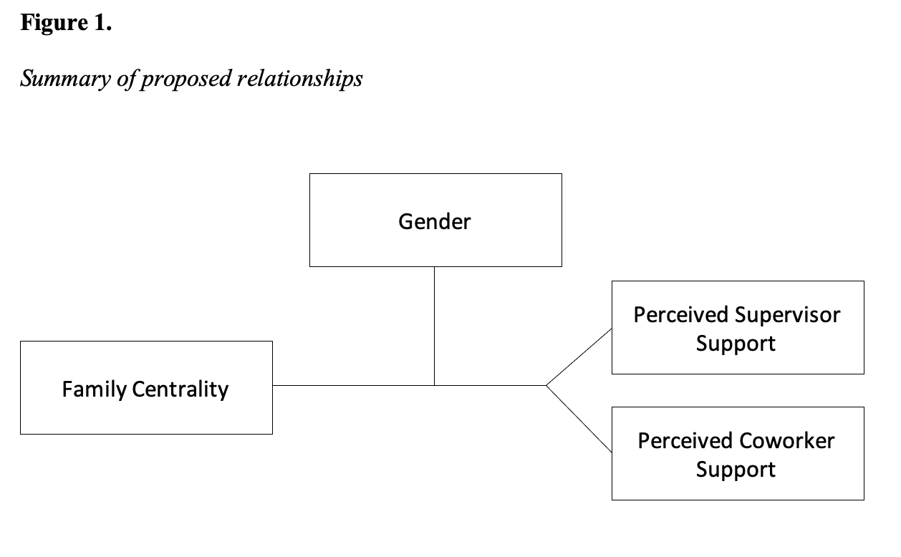
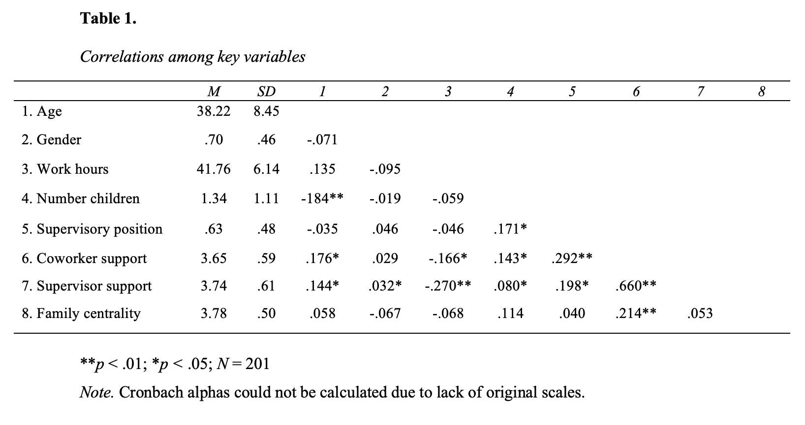
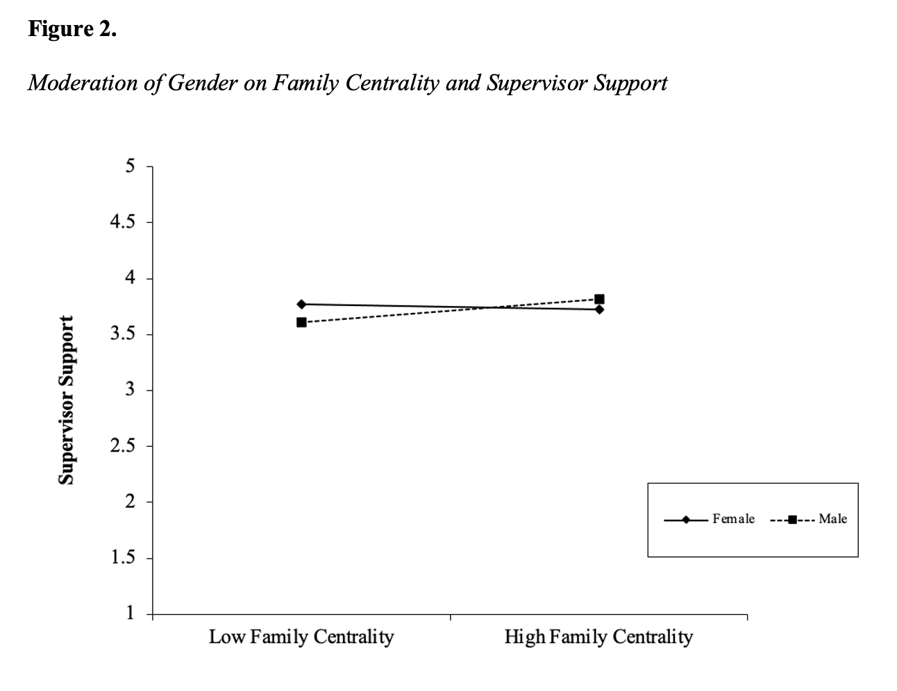
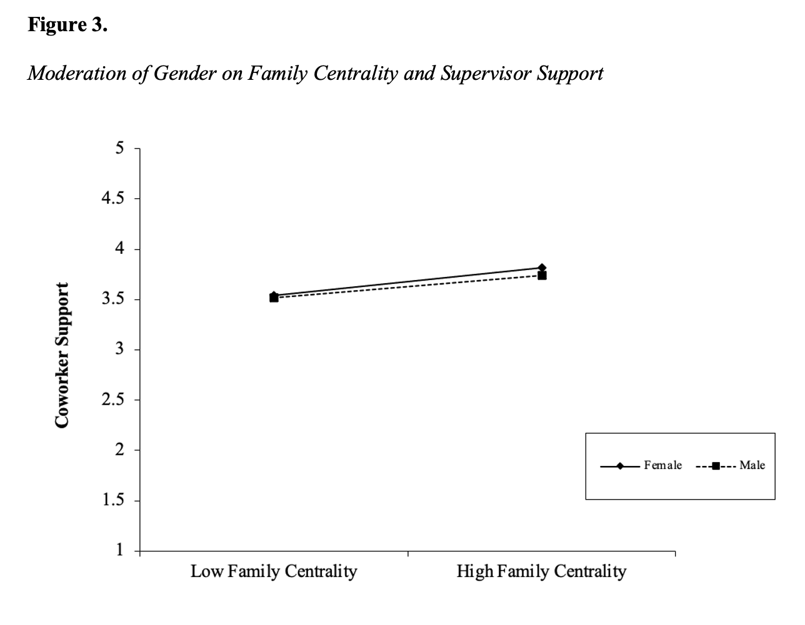

Women continue to face barriers at work although substantial progress has been made in recent decades and the “glass ceiling” continues to be shattered. Balancing work and family is a continuous struggle for workers but may be even more of a balancing act for women. Often, the conflict that arises from the struggle to balance these two competing domains, work-family conflict, is the focal point of studies due to its massive impact on employee health, satisfaction, and performance. The present study assesses the relationship between family centrality on supervisor and coworker support and the moderating effect of gender on these relationships.
Women continue to face barriers to success in organizations and sexism remains a pervasive issue that contributes to the “glass ceiling” or the metaphorical invisible barrier preventing women from being promoted to executive-level positions (Joshi et al., 2015a). Although substantial progress has been made in recent decades, there are still vast inequities that must be amended. Women’s participation in the United States workforce has risen dramatically over the decades to 56.5% in 2021 (US Bureau of Labor Statistics, 2021). However, the percentages of women in the United States Senate (26.0%), House of Representatives (27.3%), Fortune 500 CEOs (7.4%), Fortune 500 board members (27.0%), and university presidents (30.1%) still lack in equal representation of women, albeit a steep rise in recent years (Pew Research Center, 2021). Additionally, the United States lags in gender equality on the world stage. A glass-ceiling index put forth by The Economist in 2020 ranked 29 countries on female representative in management, company boards, and parliament. The United States ranked 18th on these metrics, falling behind more progressive countries such as Sweden and Finland. These persistent inequalities in the United States stem from more nuanced interactions and outcomes for women in organizations. In fact, a recent meta-analysis found that sex differences in rewards such as salary, bonuses, and promotions were 14 times larger than sex differences in performance evaluations (Joshi et al., 2015b). With such drastic imbalances in workplace outcomes, further exploration is necessary to understand the factors involved.
There are a variety of underlying factors that contribute to this gender gap such as lack of representation in executive roles in organizations, an absence of encouragement to pursue leadership positions, and objective hiring for certain positions. Additionally, the stereotyped perception of females balancing work and family domains remains one of the largest issues (Carr et al., 2008; Ibarra et al., 2013). This balance has been captured as the construct of work-family centrality in the literature. Work-family centrality represents a value judgment regarding the importance of work or family to an individual’s life (Carr et al., 2008). The current study aims to examine whether family centrality negatively predicts supervisor and coworker support and the moderating effect of gender on these relationships. Establishing gender as a moderator of these relationships is of paramount importance for three reasons. First, there is a lack of understanding of interpersonal reasons for the gender gap in organizations (Joshi et al., 2015b). Establishing family centrality as a predictor of decreased supervisor and coworker support will extend the literature on antecedents of support outcomes. Second, although family centrality has been studied in relation to other demographic factors (Sharabi, 2017), it has not yet been researched from a gender stereotype perspective. Identifying family centrality as a concept susceptible to gender stereotypes can help organizations develop strategies to reduce negative perceptions and discrimination from supervisors and coworkers toward females focusing on their families. Third, it is important to establish whether supervisors and coworker support varies congruently or differentially in relation to gender perceptions of family centrality. Both supervisor and coworker support have a litany of positive outcomes such as increased job satisfaction, reduced burnout, increased job engagement, and buffering stress (Ahmed et al., 2019; Charoensukmongkol et al., 2016; Mayo et al., 2012). Understanding the differences between supervisor and coworker support may shed light on the lack of support females may receive in the workplace.
The interface between an employee’s job demands and responsibilities at home is an important topic in the organizational psychology literature. Often, the conflict that arises from the struggle to balance these two competing domains, work-family conflict, is the focal point of studies due to its massive impact on employee health, satisfaction, and performance (Allen & Martin, 2017). Employees likely value one of these domains over the other and this is captured by work-family centrality. Family centrality is a value judgment that individuals make regarding the degree of importance that family plays in their lives (Carr et al., 2008). When an individual develops strong family-related values, then family is a central activity in the individual’s life. Values generate cognitions that then lead to attitudes, beliefs, and even actions that reflect those values (Carr et al., 2008). This centrality to family actively draws from work centrality thereby lessening the belief of importance work plays in their lives. Past research has found that family centrality is higher among women than men in middle managers, junior managers, and workers (Sharabi, 2017).
The gender stereotype perceptions of family centrality on support outcomes can be viewed through a procedural justice framework. Procedural justice concerns employees gauging fairness at work in terms of the outcomes received and the procedures used to determine one’s outcome (Skarlicki & Folger, 1997). Given that family centrality is a value judgment about the importance of family to one’s life, it may be seen as a breach of fairness towards organizational procedures. Additionally, supervisors and coworkers may react more harshly if a female values her family over work due to gender stereotypes. Breaches of procedural justice have been found to result in poorer supervisor relationship quality (McFarlin & Sweeney, 1992) and reduced coworker support (Rousseau et al., 2009).
Work-based social support refers to an individual’s integration into the social setting of the workplace in which functional interdependence is built among coworkers (Ducharme & Martin, 2000). The first distinction between supervisor and coworker support was made by French and colleagues (1974). While both important types of social support at work, different types of support are offered from both roles. Perceived supervisor support is the degree to which individuals feel that their supervisor value their contributions and care about their well-being. Further, given supervisors act as agents of the organization, employees are likely to view their supervisor’s support as indicative of their standing with the organization (Eisenberger, 2002).
An employee who has high family centrality places a large amount of importance on their family and this can detract from the importance work plays in their lives (Shabari, 2017). A supervisor, who oversees overseeing this employee in the organization, may see this as an unfair outcome thus violating procedural justice (Skarlicki & Folger, 1997). That is, the supervisor is likely to feel that the employee’s focus is more on their family than on their job. This may be signaled to the supervisor by continuously placing family demands over work demands or discussing family constantly at work. An employee whose work is a central value of theirs may not breach fairness by attending to a familial matter because their supervisor knows that they highly value their job. When a supervisor feels that the outcomes received from their employee are not fair, they are likely to become angry or resentful (Skarlicki & Folger, 1997). One of the most accessible ways for a supervisor to retaliate against an employee high in family centrality would be to withdraw their support (Shanock & Eisenberger, 2006). Favoring one’s family more than work may be seen as a lack of support for the organization and therefore the supervisor. In turn, supervisors may withdraw their support. Based on these theoretical connections, the following hypothesis is proposed:
Coworker support, another type of social support, is defined as the affective and instrumental support that coworkers offer fellow employees in attaining common work goals (Ducharme & Martin, 2000). Given that self-managing teams and project work are the most common work structure in modern organizations, employees must work well with one another and trust each other (Forret & Love, 2007). Past research has shown that procedural justice perceptions are strongly related to how one perceives their coworkers and larger work group (Forret & Love, 2007). It is likely that working alongside a coworker who has high family centrality may result in a violation of procedural justice.
The importance that a fellow coworker places on their family could feel to their workgroup that they are not “pulling their weight” on projects or at work due to the value they are placing on their family. High family centrality values may be reflected or perceived as an employee engaging in the same actions that may cause reduced support from a supervisor. Coworkers may even react more harshly than supervisors because they may feel that they must complete that employee’s work for them and work harder to make up for their lack of dedication to the team. When a coworker feels that the outcomes received from another employee are not fair or not equitable with the effort they have contributed, they are likely to become angry or resentful as this violates procedural justice (Skarlicki & Folger, 1997). Withdrawing support from a coworker would also be an effective avenue of retaliation given that a coworker does not have the same power a supervisor would have to take any other actionable measures. Reducing their support of their coworker may be seen to redistribute resources in a more equitable manner (Leventhal, 1980). Therefore, the following is hypothesized:
Differences exist between men and women. To some extent, these differences are captured by gender stereotypes; however, even if there is an overall difference between these groups, not all individuals are representative of the stereotype (Ellemers, 2018). This is where the innate human nature to use stereotypes and heuristics becomes problematic (Khaneman & Klein, 2009). Gender stereotypes, in particular, reflect the primary importance we attach to different values and behaviors that men and women pursue. The statistics reported earlier in the paper reflect a change in the demographics of the workforce, but gender stereotypes have not changed in the same way over the past decades. Men and women continue to be characterized on the core dimensions of agency and communion (Haines et al., 2016). Men are stereotyped as more individualistic, agentic, and work-oriented while women are stereotyped as more collectivistic, communal, and family-oriented (Ellemers, 2018).
As seen in Figure 1, we suggest that gender will moderate the relationship between family centrality and support outcomes. Given that women are stereotyped as being family-oriented, a woman that is high in family centrality will be confirming a gender stereotype. Therefore, more weight may be given to a women’s decision to favor family over work and the resulting breach of procedural justice will result in harsher outcomes. On the other hand, gender stereotypes may actively work to buffer the negative effects of family centrality on support outcomes for men. A man who is high in family centrality may be seen as both agentic and family-oriented. This could be interpreted by supervisors and coworkers as effectively balancing work and family. Supervisors and coworkers may reduce their support of a woman high in family centrality because gender stereotypes frame the breach of procedural justice as more egregious while men may not be punished as harshly due to the perception of their high work-orientation. It is for these reasons the following two hypotheses are proposed:
H3: Gender moderates the relationship between family centrality and perceived supervisor support, such that the negative relationship is stronger for females.
H4: Gender moderates the relationship between family centrality and perceived coworker support, such that the negative relationship is stronger for females.

We recruited our participants from Amazon.com’s Mechanical Turk. Data was collected as a cross-sectional survey at one time. We distributed our survey to Mechanical Turk full-time employees in North America who worked at least 30 hours per week. A total of 384 participants took the initial survey. One hundred and eighty-three participants were excluded from the final data set for the following reasons: 23 indicated that they were not in North America or failed to respond to that question, 12 did not answer any survey question, 69 failed to pass the attention check questions, 13 people’s IP addresses were not from North America, 16 did not complete the majority of the survey questions, 5 reported working fewer than 30 hours per week, and 45 indicated they would not participate in the follow-up survey. The remaining sample included 201 full-time employees.
Family Centrality. Family centrality was measured using a 5-item scale from Paullay and colleagues (1994). An example item is “The major satisfaction in my life comes from my family rather than my work.” (α = .93)
Supervisor Support. Supervisor support was measured using a 10-tem scale from Ducharme and Martin (2000). Five items measure affective support, and five items measure instrumental support. Items would be adapted to measure supervisor specific support. (α = .85)
Coworker Support. Coworker support was measured with the same measure from Ducharme and Martin (2000) and items were adapted to measure coworker specific support.
Table 1 shows means, standard deviations, and correlations among studied variables. To test Hypothesis 1 a simple linear regression was run. Family centrality did not negatively predict supervisor support, b = .04, p = .45. Thus, Hypothesis 1 was not supported. Hypothesis 2 was tested with a simple linear regression as well. Family centrality did not negatively predict coworker support, b = .18, p < .01. Thus, Hypothesis 2 was not supported.

To test Hypothesis 3, a moderated regression model was run in R. As shown in Figure 2, gender did not significantly moderate the relationship between family centrality and supervisor support because the interaction between family centrality and gender in predicting supervisor support was not significant, b = .27, p = .14.

Finally, Hypothesis 4 was tested using a moderated regression model in R. As shown in Figure 3, gender did not significantly moderate the relationship between family centrality and coworker support because the interaction between family centrality and gender in predicting coworker support was not significant, b = -.06, p = .71.

The present study finds that family centrality is not a significant predictor of supervisor support nor coworker support. Gender was not found to moderate the relationship between family centrality and support outcomes. Despite the unsupported hypotheses, we believe that our findings can contribute to the literature in two ways.
First, taking a procedural justice approach, it was found that family centrality positively predicts coworker support. This would suggest that an individual valuing their family over work results in greater support from coworkers. This finding is not consistent with the literature on procedural justice (Skarlicki & Folger, 1997) and would suggest that coworkers do not feel that justice is breached when one chooses family over work. Perhaps coworkers too wish to place the importance on their families over work and a fellow coworker doing so makes it more acceptable for them to do the same. This may increase the affective support that they offer their colleague as they can identify with their coworker’s motives. Also, valuing one’s family may be seen as an attractive trait and result in higher levels of respect from coworkers.
Second, gender was not found to moderate the relationship between family centrality and support outcomes. Although neither moderation was significant, supervisor support trended in a more positive direction when moderated by gender and coworker support trended in a more negative direction. These nonsignificant, conflicting findings suggest that family centrality perceptions are not influenced by gender stereotypes. Perhaps our findings suggest that greater interpersonal interaction strides have been made to combat gender stereotypes than the empirical data shows. We feel that this is a contribution to the literature because it suggests that antecedents to the gender pay and promotion gap are occurring elsewhere. By eliminating the relationship between family centrality and support outcomes, researchers can focus their search on the true predictors of the glass ceiling.
On the practice side, our findings suggest that men and women will be treated equally by their supervisors and coworkers when drawing more satisfaction from family than work. Further, employees should be informed that valuing family may result in a more cohesive work group with their coworkers. Employees should be encouraged to share information about their families with their coworkers to strengthen the support that coworkers are likely to lend them. Additionally, employees should be informed that their coworkers are likely to support them if they need to take care of a family matter and need to leave work as this is unlikely to be seen as a breach of procedural justice.
Our study was not without its limitations. First, we are unable to draw causation from this study as we used a cross-sectional design. Second, this study used self-report measures and the potential for common-method variance exists (Podsakoff et al., 2003). Third, the sample used in this study was predominantly white males, which may have influenced the results. Only 30.3% of the sample was female and the effects of gender as a moderator could have been suppressed and lacking the proper power to find statistical significance. Fourth, an overwhelming majority of the sample held supervisory roles. Given that holding a supervisory position correlated positively with both supervisor support (r = .198, p < .05) and coworker support (r = .292, p < .01), support may be given to these individuals even if procedural justice is breached when a supervisor chooses their family over work. Fifth, there may be other potential moderators and mediators that influence these relationships such as type of industry and organization (e.g., a large number of participants worked in the service industry), tenure at the organization, number of children and more.
Additionally, this study offers insight into future directions of research. First, due to data collection at one point, we cannot draw conclusions regarding the directions of these relationships. Future studies using similar designs to study family centrality are needed to examine the direction of effects observed in the current study by measuring all variables across four measurement time points and conducting cross-lagged analyses. Second, further research should examine the differences between coworker and supervisor support. Although categorized in the literature as similar types of social support, it is clear that there are different interactions occurring, possibly due to an effect of power distance. Finally, family centrality relationships with other variables moderated by gender should be examined. The literature is not extensive in this realm and following a justice perspective, there are a litany of interactions likely occurring that may be influenced by gender stereotypes.
Ahmed, U., Majid, A., Al-Aali, L., & Mozammel, S. (2019). Can meaningful work really moderate the relationship between supervisor support, coworker support and work Engagement?. Management Science Letters, 9(2), 229-242.
Allen, T. D., & Martin, A. (2017). The work-family interface: A retrospective look at 20 years of research in JOHP. Journal of Occupational Health Psychology, 22(3), 259.
Carr, J. C., Boyar, S. L., & Gregory, B. T. (2008). The moderating effect of work—family centrality on work—family conflict, organizational attitudes, and turnover behavior. Journal of Management, 34(2), 244-262.
Charoensukmongkol, P., Moqbel, M., & Gutierrez-Wirsching, S. (2016). The role of coworker and supervisor support on job burnout and job satisfaction. Journal of Advances in Management Research.
Ducharme, L. J., & Martin, J. K. (2000). Unrewarding work, coworker support, and job satisfaction: A test of the buffering hypothesis. Work and occupations, 27(2), 223-243.
Elacqua, T. C., Beehr, T. A., Hansen, C. P., & Webster, J. (2009). Managers’ beliefs about the glass ceiling: Interpersonal and organizational factors. Psychology of Women Quarterly, 33(3), 285-294.
Ellemers, N. (2018). Gender stereotypes. Annual review of psychology, 69, 275-298.
Forret, M., & Love, M. S. (2008). Employee justice perceptions and coworker relationships. Leadership & Organization Development Journal.
French, J. R. P., Jr., Rodgers, W., and Cobb, S. (1974). ‘adjustment as person-environment fit’. In: Coelho, G. V., Hamburg, D. A. and Adams, J. E. (Eds), CopingandAdaptation, Basic Books, New York.
Ibarra, H., Ely, R., & Kolb, D. (2013). Women rising: The unseen barriers. Harvard business review, 91(9), 60-66.
Joshi, A., Neely, B., Emrich, C., Griffiths, D., & George, G. (2015a). Gender research in AMJ: an overview of five decades of empirical research and calls to action: thematic issue on gender in management research.
Joshi, A., Son, J., & Roh, H. (2015b). When can women close the gap? A meta-analytic test of sex differences in performance and rewards. Academy of Management Journal, 58(5), 1516-1545.
Karasek, R. A., Triantis, K. P., & Chaudhry, S. S. (1982). Coworker and supervisor support as moderators of associations between task characteristics and mental strain. Journal of Occupational Behaviour, 3(2), 181-200.
Leventhal, G. S. (1980). What should be done with equity theory?. In Social exchange (pp. 27-55). Springer, Boston, MA.
Mayo, M., Sanchez, J. I., Pastor, J. C., & Rodriguez, A. (2012). Supervisor and coworker support: a source congruence approach to buffering role conflict and physical stressors. The International Journal of Human Resource Management, 23(18), 3872-3889.
McFarlin, D. B., & Sweeney, P. D. (1992). Distributive and procedural justice as predictors of satisfaction with personal and organizational outcomes. Academy of management Journal, 35(3), 626-637.
Paullay, I. M., Alliger, G. M., & Stone-Romero, E. F. (1994). Construct validation of two instruments designed to measure job involvement and work centrality. Journal of applied psychology, 79(2), 224.
Rousseau, V., Salek, S., Aubé, C., & Morin, E. M. (2009). Distributive justice, procedural justice, and psychological distress: The moderating effect of coworker support and work autonomy. Journal of Occupational Health Psychology, 14(3), 305.
Shanock, L. R., & Eisenberger, R. (2006). When supervisors feel supported: Relationships with subordinates’ perceived supervisor support, perceived organizational support, and performance. Journal of Applied psychology, 91(3), 689.
Skarlicki, D. P., & Folger, R. (1997). Retaliation in the workplace: The roles of distributive, procedural, and interactional justice. Journal of applied Psychology, 82(3), 434.
Steinhardt, M. A., Dolbier, C. L., Gottlieb, N. H., & McCalister, K. T. (2003). The relationship between hardiness, supervisor support, group cohesion, and job stress as predictors of job satisfaction. American Journal of Health Promotion, 17(6), 382-389.
The Data on Women Leaders. (2021). Retrieved 17 December 2021, from https://www.pewresearch.org/social-trends/fact-sheet/the-data-on-women-leaders/
The glass-ceiling index - Highlights - The Economist - World in Figures. (2021). Retrieved 17 December 2021, from https://worldinfigures.com/highlights/detail/324
U.S. Department of Labor. (2021). Work force statistics in 2021. Retrieved from https://www.bls.gov/news.release/empsit.t02.htm